вњ•
‹
1 / 9
›
13-е заседание TEG-NII, декабрь 2026
Рскусственный интеллект становится ключевым инструментом повышения эффективности неинтрузивного контроля: ускоряет анализ рентгеновских изображений, снижает нагрузку РЅР° инспекторов Рё повышает точность выявления нарушений РїСЂРё сохранении РїСЂРѕРїСѓСЃРєРЅРѕР№ способности постов.
Единая интеллектуальная платформа анализа рентгеновских изображений СЃ помощью РР, охватывающая железнодорожный, автомобильный Рё багажный каналы контроля. Работает как веб-дашборд СЃ API для интеграции РІ существующие таможенные РРЎ.
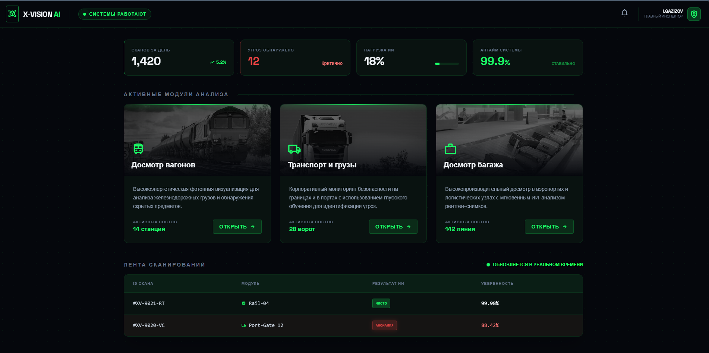
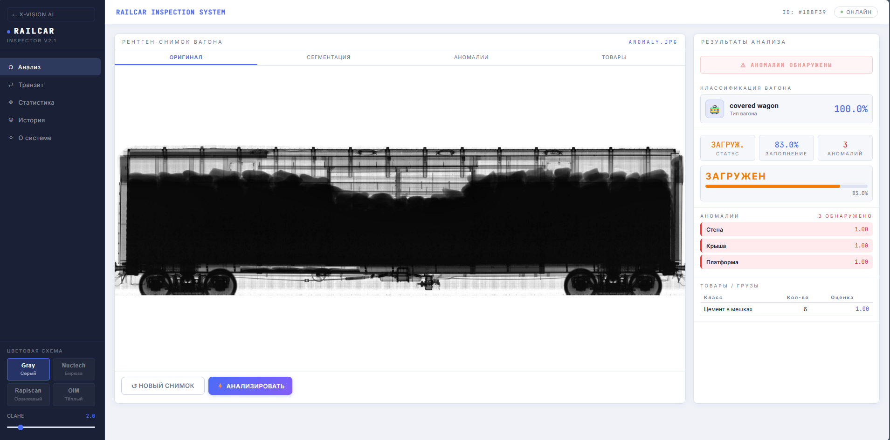
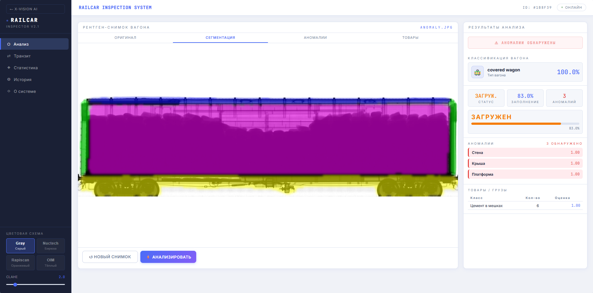
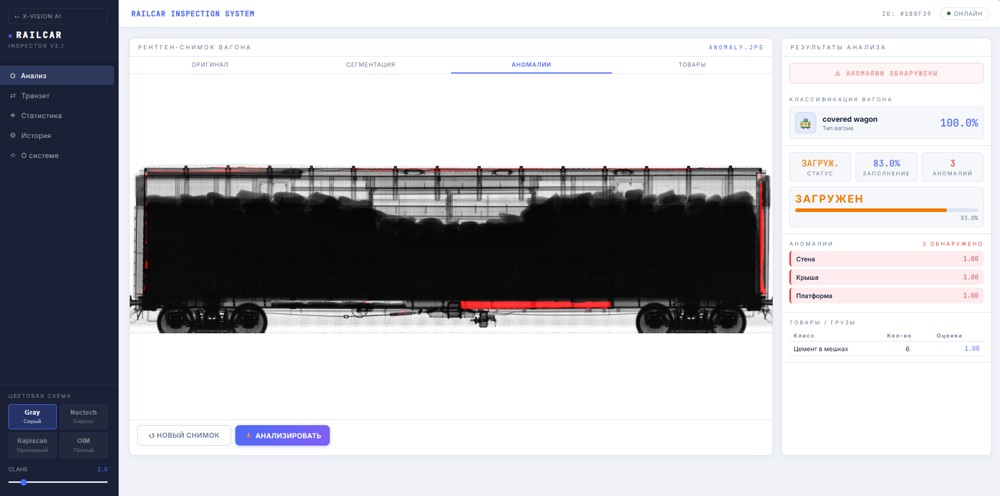
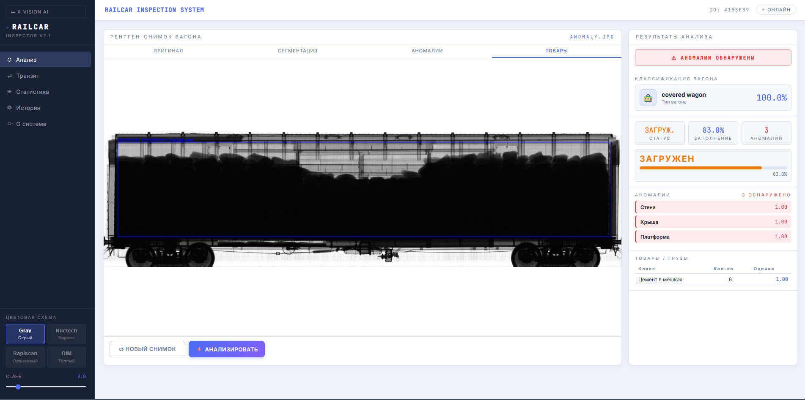
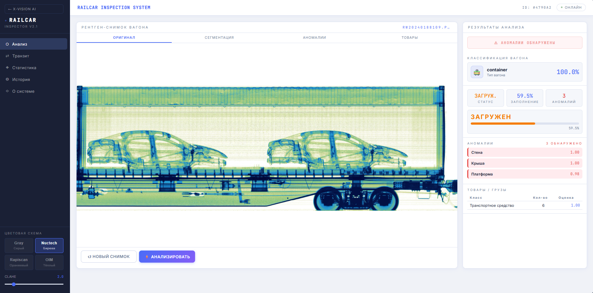
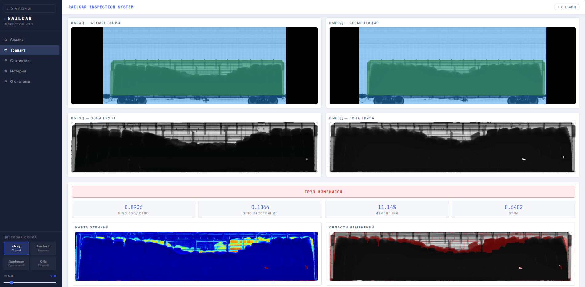
Большинство действующих авто-РДК — устройства Rapiscan Z-portal РЅР° РѕСЃРЅРѕРІРµ backscatter-технологии, что существенно затрудняет полноценный РР-анализ.
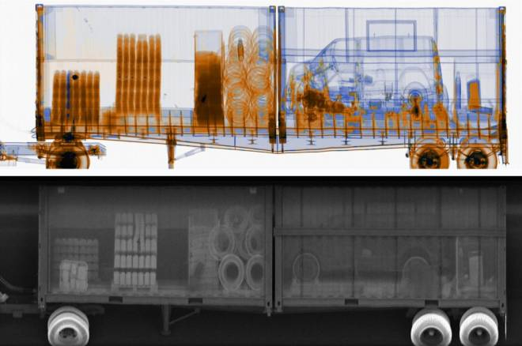
Модель компьютерного зрения для обнаружения запрещённых и подлежащих декларированию предметов на рентген-снимках багажа.
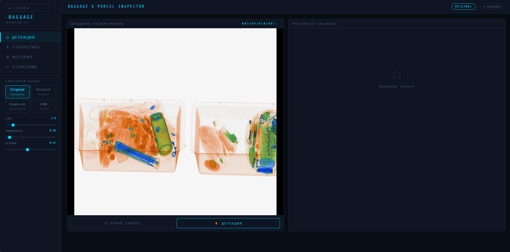
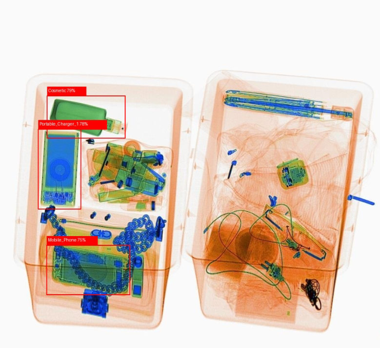
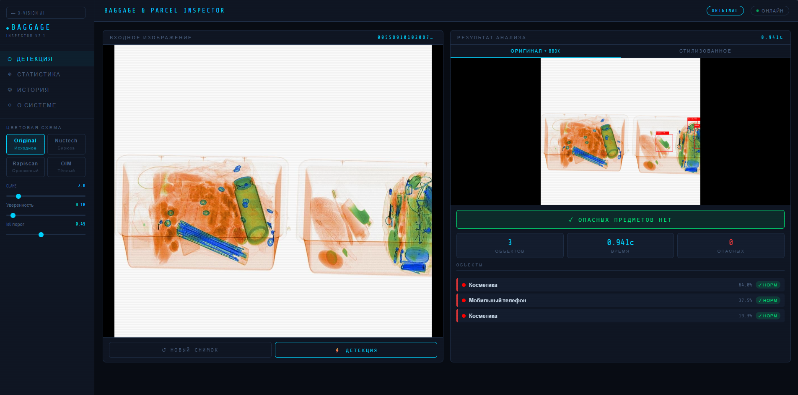
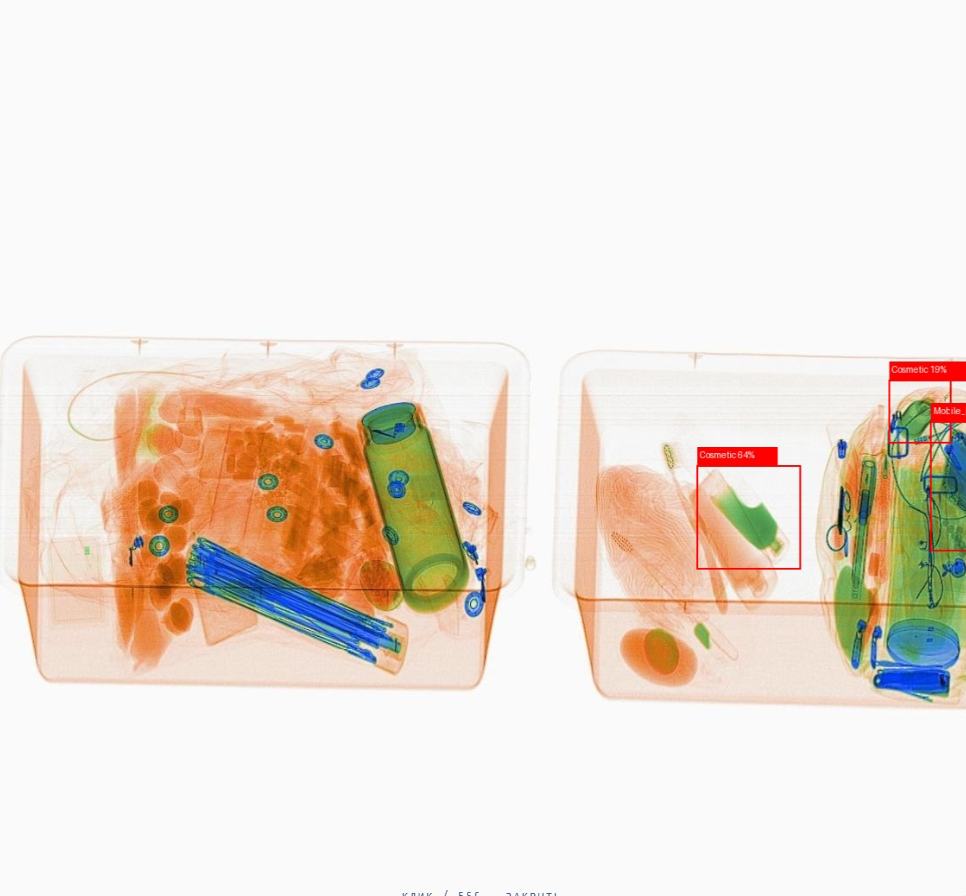
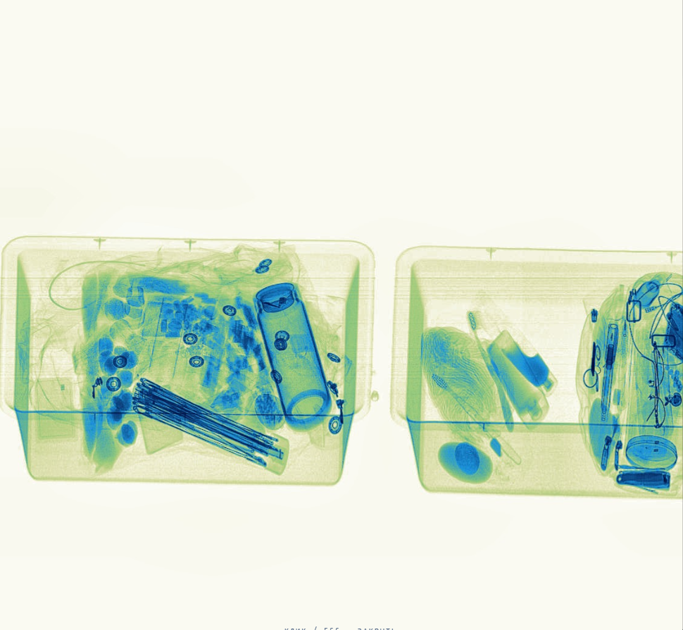
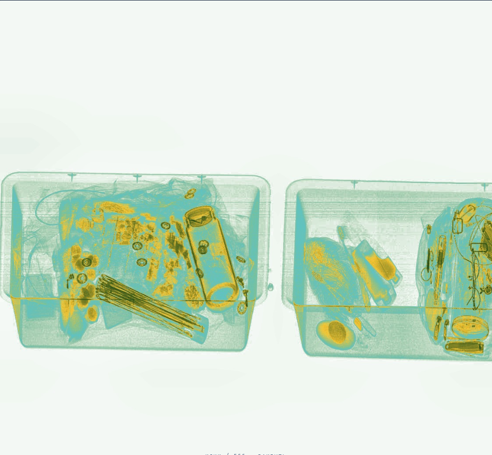
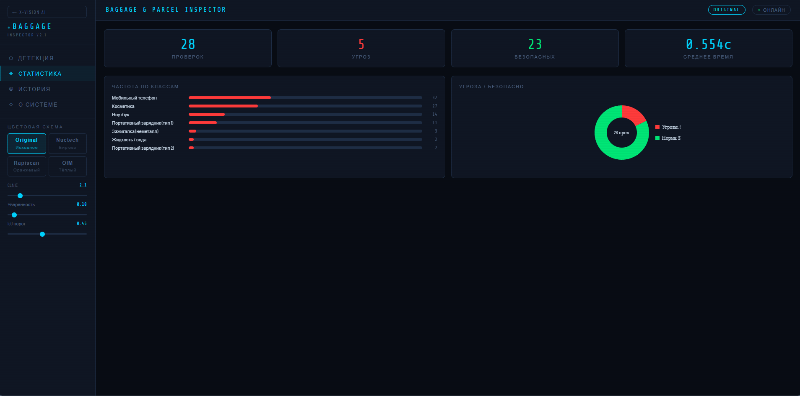
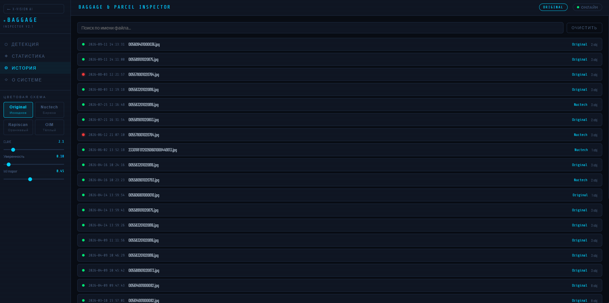
Ведутся работы по внедрению обмена рентгеновскими снимками и данными о товарах и транспортных средствах с Республикой Казахстан на основе подписанного меморандума о сотрудничестве между таможенными органами.
Для осуществления проекта идут работы по унификации формата рентгеновских снимков и данных на основе стандарта ВТамО UFF 2.0/3.0.
Р’РѕРїСЂРѕСЃС‹?